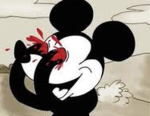
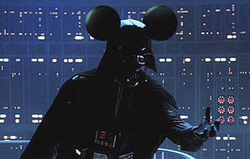

Niño Rata
 De: La Frikipedia, la enciclopedia extremadamente seria.
De: La Frikipedia, la enciclopedia extremadamente seria.
| De la serie monstruos mitológicos:
|
| Niño Rata
|

|
| ¿Niño Rata? eso ofende Vegetta777
|
|
| Nombre Científico
|
Rata de 2 patas ♫
|
| Hábitat
|
Juegos en Línea
|
| Organización
|
Ratonymous
|
| Actividad
|
Cagarla en linea
|
| Dieta
|
Tu sufrimiento al ser insultado por ellos, o eso es lo que creen
|
| Inteligencia
|
Nula -11
|
| Aparición
|
Cuando tengas muchos puntos y/o dinero, el Niño Rata saldrá para cagarla
|
| Número aproximado
|
Se multiplican como ratas, número actual:  (Se los dije) (Se los dije)
|
| Armadura
|
Su casa, ya que jamás sale de ella
|
| Ataques
|
El Hacker, La hortografilla, La amenaza a muerte, La psicológica y La cagaste
|
| Moral
|
Las ratas unidas, jamás serán vencidas
|
| Notas
|
subxsub metanse en mi knal xddd yt subo cod y minekraf xddd
|
Niño Rata es el término dado a los usuarios de entre 7 a 13 años que se desahogan en Internet (como todo el mundo) insultando a seres inferiores como tú y yo con sus angelicales voces.
Niño Rata
Esta especie de roedor se crió en un lugar llamado Internet, y suelen encontrarse en áreas silvestres como Youtube, Yahoo! Respuestas, Taringa y en todos los juegos en linea (al mismo tiempo). Tienen más piojos que neuronas y sus padres sufren de crisis existenciales, razón por la cual el Niño Rata nunca recibió educación.
Se dice que un Niño Rata fue quien inspiró a Paquita la del Barrio para que escribiera su canción más famosa.
Alimentación
Suelen alimentarse de distintos tipos de queso, aunque son adictos al Ratatoille. También suelen tener un tipo de queso entre los dedos de sus pies, y tienen una especial predilección por un supuesto "queso-crema".
También obtienen proteínas y calorías al atacar a otros usuarios en algún juego en línea, dando "pulgar abajo" en el caso de Youtube y cuando no tienen nada que hacer (de hecho jamás tienen algo que hacer) en Yahoo Respuestas hacen preguntas insultando a otros usuarios por hacer muchas preguntas. También respondiendo satíricamente, haciendo alarde de su psicología precisa e innegable.
Origen
 Mickey al saber sobre la especie de niños rata.
Estudios realizados por Biólogos Marinos Frikis apuntan a diversos orígenes, entre ellos:
- Creado en un laboratorio: Se cree que el Niño Rata es producto de un espermatozoide extraído de un cojón de Veggetta777, mezclada con el ADN de una ladilla del Rubius e insertada en el óvulo de una rata criada por Richi Phelps.
- Pokefilia: Otra teoría apunta a que es el resultado de la pokefilia, por una relación entre un entrenador y su Rattata o en su defecto, Raticate. También, menos probable, una Pikachu, o incluso la violación de un Nidoking a su propia entrenadora.
- Creación Divina: Los más religiosos tienen la teoría de que los Niños Ratas fueron la primera creación de Dios, por esta razón se explica sus desperfectos sociales y su molesta conducta.
- Creación Militar: La mayoría de las personas tienen la teoría de que los Niños Ratas fueron la primera creación de España, como ejercito nazi-onal para la supreción de las manifestaciones durante el mandato de Franco.
Frases típicas de Niños Rata
- "¡jaker, jaker d m#$**a!"
- "j0DER TIO ERES UN CRACK!!!"
- [Inserte ruidos de sollozo aquí]
- "¡Pégate un tiro!"
- "Minecraft es el mejor juego de la historia"
- "Suscribete y me suscribo"
- "Vegetta777 es el mejor youtuber"
- "klmate jilipoyas klmate"
- "¿Conoces a Willyrex, conoces a Willyrex?"
- "Vegetta777 es tu padre"
- "Voy a jakear a todos pendejos de m#$**a"
- "Díganme en que servidor esta jugando Elrubius o Vegetta777"
- "Estúpidos Nobs, estúpidos nobs"
- "Yo soy muy Pro pendejos"
- "No soy niño rata estúpido"
- "¡Tú eres un niño rata!"
- "¡ME CAGO EN TUS MUERTOS"
- "¡Minecraft es mi vida quiero vivir en Minecraft!"
- "¡Respeta a Vegetta777, respétalo!"
- "No tngo mala ortografia idi0ta d m#$**a, haci c eskribe, aktualisate inbesil"
- "Cállate n00b, cállate n00b"
- "Niño Rata??? eso ofende Vegetta777"
- "Sub x Sub? sub x sub !!SUB X SUB¡¡ (RUEGA)"
- "lique para q lo vea"
- "¡Goqu es el mejor anime del mundo!"
- "¡Soy Español!"
- "Si ke soy el rey de Carlos Puty Advans guarfar"
- "Le gane a markellof y al niga Spawn en un pug en Conter estraik"
- "Escrilex el dios
- "Begeta te as pasao 1 deamante en el minuto 6:33:11"
Características, gustos y hobbys
El niño rata tiene estudios de Psicología y Filosofía en Harvart, y un coeficiente intelectual tan alto que le permite entender y predecir las cosas que dicen, hacen y piensan los demás. Son expertos en los videojuegos.
Son dueños de edificios, autos clásicos, motocicletas, cuentas bancarias, helicópteros y Cazas en GTA; todo conseguido con trucos, ya que no pueden pasar ni la mitad de las misiones del juego, siendo normalmente GTA y Minecraft su única vida social, laboral, criminal y sexual.
Suelen tener un relación amorosa con Cleverbot y fapearse con cualquier videojuego... CUALQUIERA, incluso con las chicas de Sonic. Sus películas favoritas son "Rata-Touille", "Stuart Litle" y "Lo que el agua se llevó".
Sus ídolos son El Rubius, Willyrex, Vegetta777, Tú ríes yo sufro, Duxa, Fernanfloo, El Bananero, Dross, Mox y Mickey Mouse, entre otros. También suelen insultar y amenazar de muerte a Veggetta777, El Rubius, Willyrex, Tu ríes yo sufro, Duxa, Fernanfloo, El Bananero, Dross, Mox y Mickey Mouse, entre otros.
Diferencias entre un Niño Rata y otros bichejos
 Niño Rata... YO SOY TU PADRE.
- Niño Rata ≠ Noob: Un N00b es un novato e ignorante sobre una cuestión en la que participa. Un N00b puede ser cualquiera, un niño, un adulto, una abuela, todos (como en V for Vendetta) y un Niño Rata es aquella criatura molesta (de 7 a 14) a la que se le suben los humos a la cabeza mientras juega, pero cuando va a perder usa su técnica especial y suelta unos chillidos que le desgarran los oídos y el ano a cualquiera que tenga los auriculares puestos.
- Niño Rata ≠ Troll: Un troll es una persona que se convence a sí misma para creer que sus idioteces son graciosas y que tienen un fin y una razón. Molesta a gente en internet porque no puede obtener satisfacción de una acción productiva. Y el Niño Rata se conecta para hacer lo que sus instintos naturales le dictan: Cagarla y echarle a perder el día a otros. Pero esto no solo se queda en los videojuegos, ya que hace lo mismo en cualquier página de internet.
¿Sabías que...
- ... Tu hermano menor es niño rata?
- ... Tu también lo eres?
- ... Aunque no seas un niño?
- ... Las Niñas Rata no existen?
- ... Lo de arriba lo escribió una Niña Rata?
- ... Ellos le dicen Niños Rata a los demás?
- ... Los niños ratas no saben que son niños ratas?
- ... Los niños rata son una de las desgracias que nos han dejado el internet?
- ... Es una epidemia solo conocida en Hispanoamérica?
- ... Se masturban desde los 5 años?
- ... Tienen un fondo de Minecraft en su escritorio?
- ... Eskriben haci?
- ... los niños rata fueron creados para servir al ejercito Alemán?
- ... Tú le has dicho Niño Rata a alguien que no lo es?
- ... Son los subnormales de Memondo que publican porno gay y transexual?
- ... IP anónima es un niño rata?
- ... Si repites "Niño Rata" 3 veces a media noche, frente a un espejo y sólo, se te aparecerá uno?
- ... Para los Niños Rata morir en Minecraft es como morir en la vida real?
- ... Los Niños Rata llaman Goku a Dragon Ball Z?
- ... A Joto Viver lo comparan siempre con cualquier personaje de un Videojuego o Anime? Especialmente con Cocu?
- ... sus chillidos pueden destruir un Tanque?
- ... Si buscas en Google "Niño Rata" aparece tu retrato?
- ... Su rey es Vegetta777?
- ... Y su reina es El Rubius?
- ...Se hacen pasar por mujeres con pinta de prostiputas para llamar la atención? (travestis amateurs)
- ...Tienen el Conter con Scream crackeado?
- ...En Conter solo saben jugar servidores de Zombie Mod?
- ...Los Niños Rata se insultan incluso entre ellos?
- ...Los Gamers y Youtubers de Gringolandia no conocen a esta especie? ¿Ni tampoco PewDiePie?
- ... Ponen dubstep en sus videos?
Véase también
Enlaces externos
 Informática Informática
|
Personajes Infames Famosos
Dispositivos de Almacenamiento
|
|
|
 Shooter Shooter
 Terror Terror
 Velocidad Velocidad
 Rol Rol
 Estrategia Estrategia
 Aventuras Aventuras
 Fight! Fight!
 Clásicos Clásicos
 Deportivos Deportivos
 Aventura gráfica Aventura gráfica
 Novela visual Novela visual
 Personajes de videojuegos Personajes de videojuegos
|
Autor(es):
- Krusher
- Fordus
- Frikisexigirl!!!
- Shadowmura
- Wguayana
- Juansimat
- Salazar Slytherin
- Thelordg95
- Mordegoku
- Luinicle
Frikipedia 2005-2016, Licencia
GFDL 1.2 - Extraído por FrikiLeaks